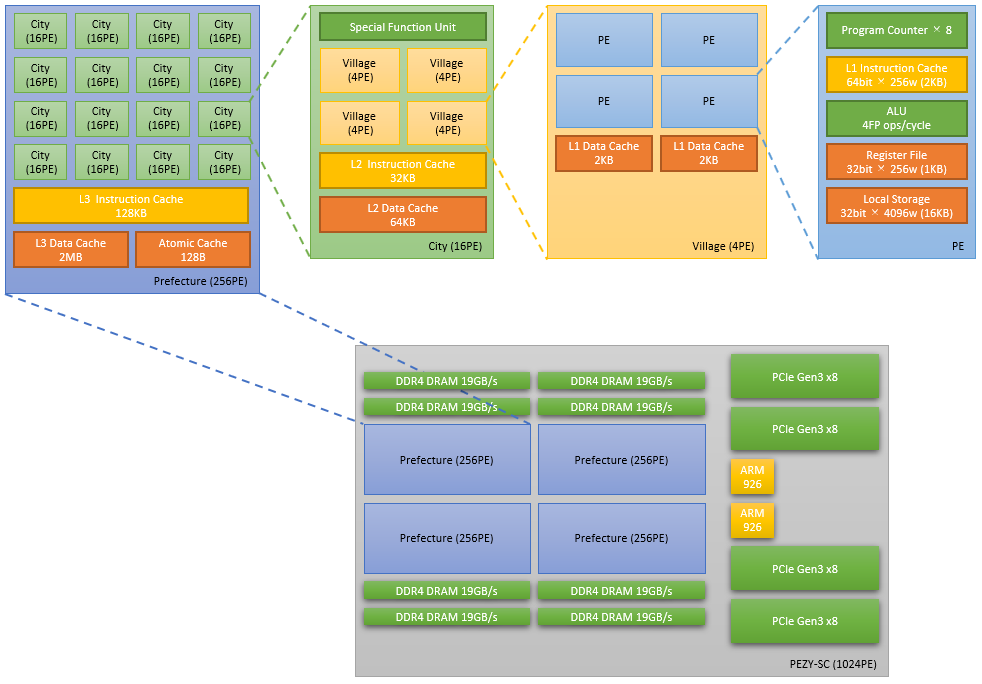

PEZY-SC Specification¶
overview¶
Fig. 3 shows block diagram of PEZY-SC.

Fig. 3 PEZY-SC block diagram
Remarks:
- One special function unit (SFU) is installed in each City to calculate division, modulo, square root, and inverse square root.
- A SFU is shared with 16 PEs.
L1 Data Cache and L2 Data Cache DO NOT take hardware coherency (for more detail).
Each Prefecture has its own private LLC which is NOT shared with else other Prefecture.